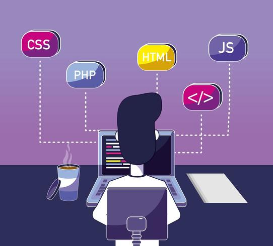

Tecnico superior en desarrollo de aplicaciones Multiplataforma.
< / >
Hola!!
Mi nombre es jesus y soy un entusiasta de la programacion desde muy niño sentia atraccion por todo lo relacionado con los videojuegos mas adelante esta aficion paso de los videojuegos a la informatica en general motivandome a estudiar algo relacionado, siendo espeficamente el desarrollo de aplicaciones multiplataforma, DAM de forma abreviada.
Busco abrirme laboralmente y tener la oportunidad para demostrar mis habilidades, estando en una empresa que me permita crecer y aprender cada dia mas sobre el sector en el que me muevo.

CV
Aqui encontraras mi curriculum para saber mas a fondo sobre mis competencias laborales.